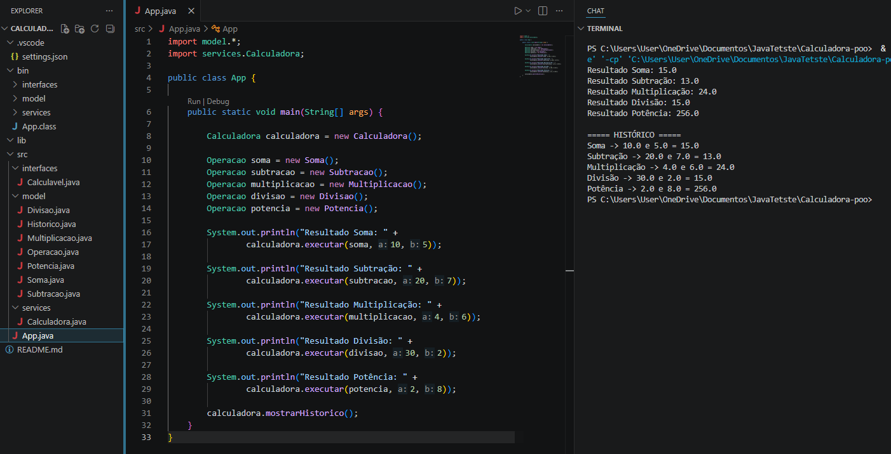

Java
APIs robustas, orientação a objetos e backends que aguentam crescimento.
50% de domínio
disponível para novos projetos
Desenvolvedor full stack que transforma ideias em produtos digitais rápidos, confiáveis e feitos para durar.
const developer = {
name: 'Jota Java Dev',
focus: ['Java', 'Web'],
mindset: 'build & learn',
coffee: true
};
02 / stack
APIs robustas, orientação a objetos e backends que aguentam crescimento.
Interfaces claras e responsivas com HTML semântico, CSS e JavaScript.
Do banco de dados ao deploy: visão de produto, testes e entrega contínua.
03 / projetos selecionados

Ainda não há projetos nessa categoria.
um pouco sobre mim
Gosto de entender o problema antes de abrir o editor. Trabalho entre o raciocínio estruturado do Java e a liberdade visual da web, criando experiências que resolvem de verdade.
conheça meu jeito de trabalhar ↗04 / contato
Tem uma ideia em mente?
Vamos dar forma a ela.